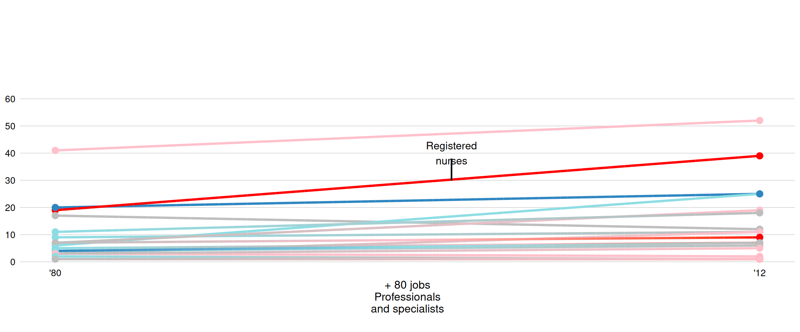
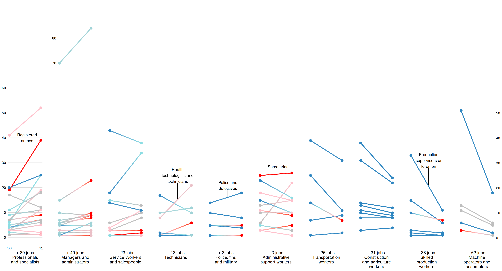
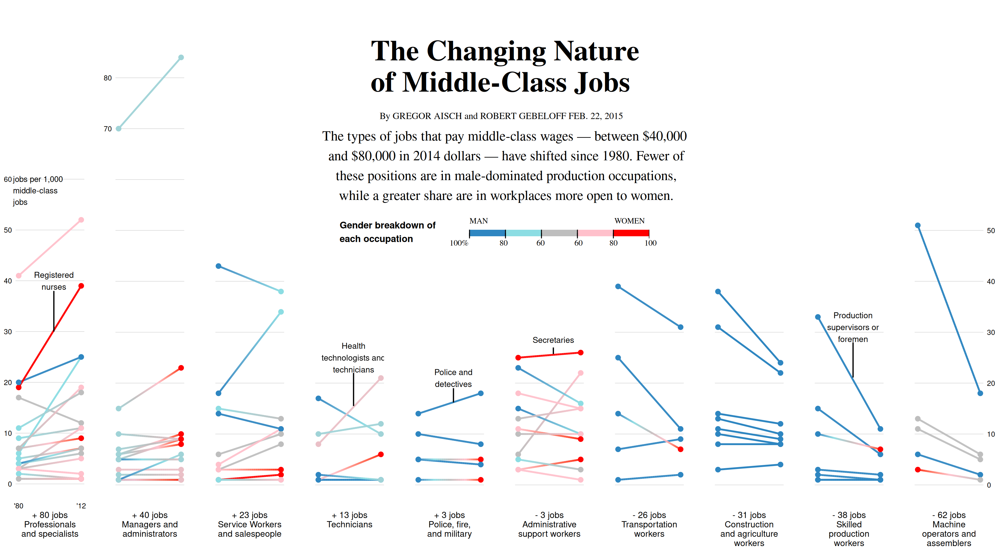
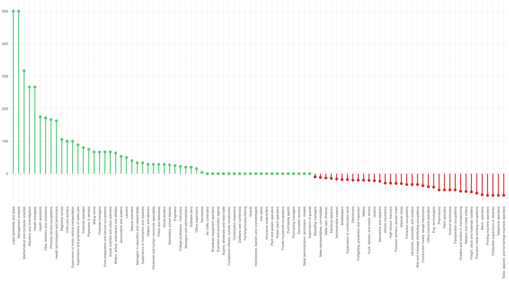
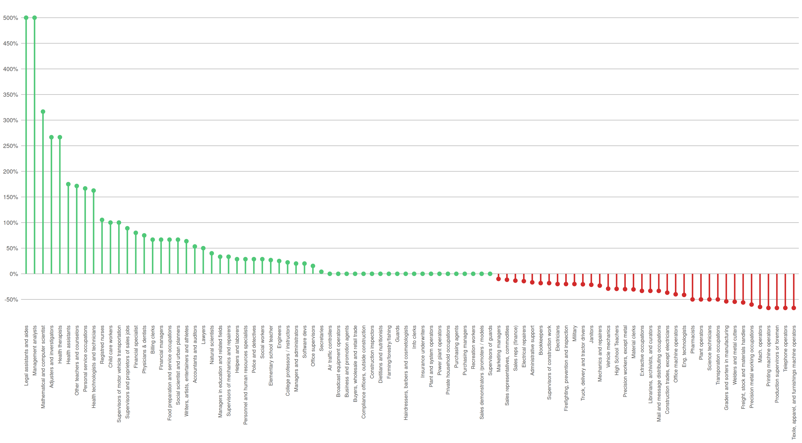
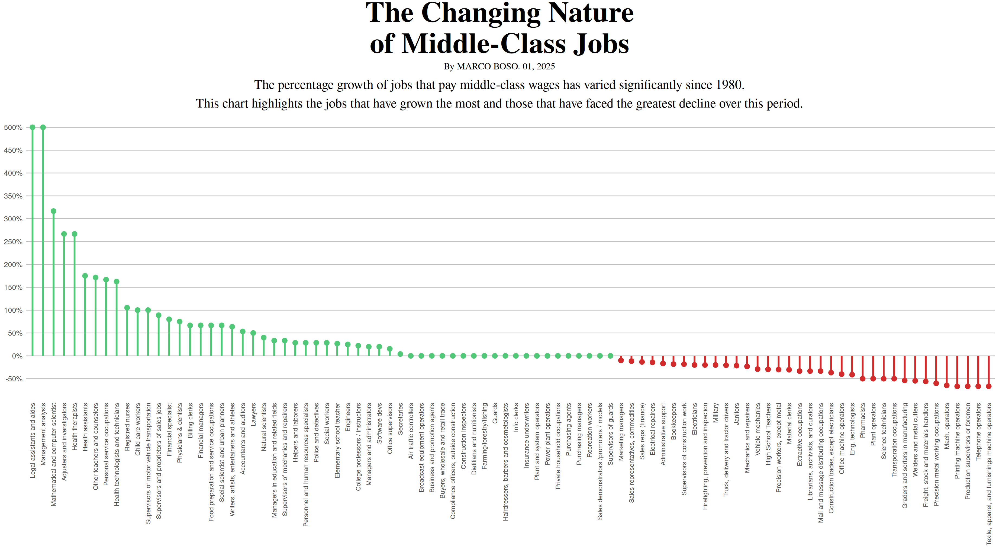

Introduction
The chart from The New York Times examines the shifting landscape of middle-class jobs, defined as positions paying between $40,000 and $80,000 in 2014 dollars, and how these changes have impacted the workforce since 1980. Over a span of 30 years, the analysis by a team of reporters and data journalists revealed a significant transformation in the types of jobs offering middle-class wages. Notably, there has been a decline in male-dominated production occupations, traditionally associated with manufacturing and physical labor. At the same time, a growing share of middle-class positions has emerged in workplaces that are more inclusive and accessible to women, such as healthcare, education, and administrative roles.
This shift reflects broader societal changes, including advancements in technology, globalization, and evolving cultural norms about gender roles in the workforce. As part of a comprehensive series on the American middle class, the data highlights that women have been the primary beneficiaries of these shifts, gaining increased access to stable, well-paying jobs that were previously less available to them.

Replication work
Load the packages
The chart is made up of 10 individual graphs, each illustrating changes in employment within a specific sector over time. To construct the final visualization, I first modeled and created each graph separately, ensuring that each accurately depicted the employment trends for its respective sector. Once the individual graphs were completed, I combined them into a cohesive and comprehensive chart using faceting.
Insert the data
I was unable to access an existing online dataset, so I had to recreate the data myself. Fortunately, a detailed description was provided on the same page as the article, and using that information, I was able to create an Excel file containing all the necessary details to produce the chart. To make it easier to manage the data across the corresponding graphs, I decided to organize the Excel file into separate sheets, each dedicated to a specific occupational area.
Here you can find the link to the page of the article to extract the data: The Changing Nature of Middle-Class Jobs - The New York Times
data1 <- read_xlsx("middle_class.xlsx", sheet = "Professionals and specialists")
data2 <- read_xlsx("middle_class.xlsx", sheet = "Managers and administrators")
data3 <- read_xlsx("middle_class.xlsx", sheet = "Service workers and salespeople")
data4 <- read_xlsx("middle_class.xlsx", sheet = "Technicians")
data5 <- read_xlsx("middle_class.xlsx", sheet = "Police, fire and military")
data6 <- read_xlsx("middle_class.xlsx", sheet = "Administrative support workers")
data7 <- read_xlsx("middle_class.xlsx", sheet = "Transportation workers")
data8 <- read_xlsx("middle_class.xlsx", sheet = "Construction and agricolture ")
data9 <- read_xlsx("middle_class.xlsx", sheet = "Skilled production workers")
data10 <- read_xlsx("middle_class.xlsx", sheet = "Machine operators and assembler")This is an example of the sheet for ‘Managers and administrators’. The column ‘Jobs’ represents specific occupations or job titles within each sector, while ‘Sector’ groups jobs into broader categories and reflects the division by sheets. ‘Years’ indicates the time frame of the data (1980 and 2012), and ‘Employed’ shows the number of people employed in a specific job, expressed in thousands (e.g., 41 represents 41,000 workers). Finally, ‘Gender’ represents the proportion of workers in a job that are male, expressed as a decimal (e.g., 1.0 means 100% male, 0.0 means 100% female, and intermediate values like 0.5 indicate an equal gender balance).
head(data1)# A tibble: 6 × 5
Jobs Sector Years Employed Gender
<chr> <chr> <dbl> <dbl> <dbl>
1 Elementary school teacher Professio… 1980 41 0.2
2 Elementary school teacher Professio… 2012 52 0.2
3 Registred nurses Professio… 1980 19 0
4 Registred nurses Professio… 2012 39 0
5 Mathematical and computer scientist Professio… 1980 6 0.7
6 Mathematical and computer scientist Professio… 2012 25 0.7Loop for the gradient transition
In my opinion, the most interesting aspect of the chart is the gradient color shift within the lines that make up the visualization. This color change represents the percentage shift in the workforce composition for a specific job by gender-blue indicates 100% male employment, red represents 100% female employment, and intermediate colors reflect varying percentages, culminating in a neutral gray where gender parity is achieved. To implement this effect, it is necessary to create a loop that interpolates the colors along the lines, ensuring a smooth gradient transition between points.
# Tranform the data in Gender column in factor to create the interpolation for the color gradient
data1$Gender <- as.factor(data1$Gender)
data2$Gender <- as.factor(data2$Gender)
data3$Gender <- as.factor(data3$Gender)
data4$Gender <- as.factor(data4$Gender)
data5$Gender <- as.factor(data5$Gender)
data6$Gender <- as.factor(data6$Gender)
data7$Gender <- as.factor(data7$Gender)
data8$Gender <- as.factor(data8$Gender)
data9$Gender <- as.factor(data9$Gender)
data10$Gender <- as.factor(data10$Gender)
# Loop for the colors of the lines
interpolate_lines <- function(data) {
data %>%
group_by(Jobs) %>%
# Ensure there are at least 2 unique points and no missing values
filter(n_distinct(Years) > 1 & !is.na(Years) & !is.na(Employed) & !is.na(Gender)) %>%
summarise(
interpolated_data = list(
data.frame(
Years = seq(min(Years), max(Years), length.out = 100), # Smooth grid for Years
Employed = approx(Years, Employed, xout = seq(min(Years), max(Years), length.out = 100))$y,
Gender = approx(Years, Gender, xout = seq(min(Years), max(Years), length.out = 100))$y
)
)
) %>%
unnest(cols = c(interpolated_data)) # Expand nested data into rows
}First graph
Initial plot set-up
In the initial plot setup, I added light gray horizontal grid lines for reference and used geom_line() to plot smooth gradient lines representing employment trends for each job category, with colors mapped to gender proportions. I overlaid the original data points with geom_point() for clarity and defined a gradient color scale from red (100% female) to blue (100% male), with gray indicating gender parity.
interp_data1 <- interpolate_lines(data1)
plot1_step1 <- ggplot() +
geom_hline(yintercept = seq(0, 60, 10), color = "lightgray", linewidth = 0.3) +
# Add smooth gradient lines for each job
geom_line(data = interp_data1, aes(x = Years, y = Employed, group = Jobs, color = as.numeric(Gender)), linewidth = 1.2) +
# Add original points for reference
geom_point(data = data1, aes(x = Years, y = Employed, color = as.numeric(Gender)), size = 3) +
# Define gradient color scale for Gender
scale_color_gradientn(colors = c("red", "pink", "grey", "#8cdde3", "#2e86c1"), name = "Gender")Axes Customization
The axes were adjusted with scale_x_continuous() and scale_y_continuous(). The x-axis was formatted to display the key years 1980 and 2012 with shortened labels (“’80” and “’12”), while the y-axis was set with breaks at intervals of 10 and limited to a range of 0 to 90. The y-axis labels were tailored to show numeric values up to 60, leaving the upper range visually open. At least I added a descriptive label to the x-axis using labs() to provide context.
plot1_step2 <- plot1_step1 +
# Customize axes
scale_x_continuous(breaks = c(1980, 2012), labels = c("'80", "'12")) +
scale_y_continuous(
breaks = seq(0, 80, 10),
limits = c(0, 90),
labels = c("0", "10", "20", "30", "40", "50", "60", "", "")
) +
labs(x = "+ 80 jobs\nProfessionals\nand specialists\n")Theme
I applied a clean and minimal aesthetic to the chart using theme_minimal(). This theme simplifies the overall design by removing unnecessary visual elements, allowing the data to stand out more clearly.
To further refine the appearance, I customized specific elements using the theme() function. I removed major grid lines on the x-axis and y-axis, as well as all minor grid lines, to reduce clutter. The legend was hidden with legend.position = “blank” since it was not needed for this chart.
I adjusted the y-axis text to be clear and legible by setting its size and color, while the x-axis text was styled with a slight margin adjustment for better alignment.
plot1_step3 <- plot1_step2 +
theme_minimal() +
theme(
panel.grid.major.x = element_blank(),
panel.grid.minor = element_blank(),
panel.grid.major.y = element_blank(),
legend.position = "blank",
axis.text.y = element_text(size = 10, color = "black"),
axis.text.x = element_text(margin = margin(t = -8), size = 10, color = "black"),
axis.title.y = element_blank(),
axis.title = element_text(size = 12)
) Annotation
Using annotate(“text”), I added a label for “Registered nurses,” positioning it near the corresponding data point to replicate the original annotation. I used annotate(“segment”) to draw a connecting line between the label and the data point, mirroring the style of the original chart.
plot1 <- plot1_step3 +
annotate("text", x = 1998, y = 40, label = "Registered\nnurses",
size = 4, color = "black", fontface = "plain", hjust = 0.5) +
annotate("segment", x = 1998, xend = 1998, y = 30, yend = 38,
color = "black", linewidth = 0.8)
plot1
(it looks a little… weird; but don’t worry after the faceting the result will be much better!)
The others graphs
Common part
Since the graphs are very similar to each other and differ only in small but significant ways that make each graph unique, I decided to group the shared elements, such as the theme and the color_gradient, into variables. This allows me to reuse these components in each graph, reducing redundancy and shortening the code for each individual plot.
gender_color_scale <- scale_color_gradientn(
colors = c("red", "pink", "grey", "#8cdde3", "#2e86c1"),
name = "Gender"
)
base_theme <- theme_minimal() +
theme(
panel.grid.major.x = element_blank(),
panel.grid.minor = element_blank(),
panel.grid.major.y = element_blank(),
legend.position = "none",
axis.title.y = element_blank(),
axis.title = element_text(size = 12)
)2° Graph
In the second plot, the x-axis does not include custom labels, simplifying its appearance, while the y-axis uses scale_y_continuous() with a custom labeling scheme that only displays “70” and “80” at the higher range of values, leaving the lower values blank.
interp_data2 <- interpolate_lines(data2)
plot2 <- ggplot() +
geom_line(data = interp_data2, aes(x = Years, y = Employed, group = Jobs, color = as.numeric(Gender)), linewidth = 1.2) +
geom_point(data = data2, aes(x = Years, y = Employed, color = as.numeric(Gender)), size = 3) +
gender_color_scale +
scale_x_continuous(breaks = c(1980, 2012)) +
scale_y_continuous(
breaks = seq(0, 80, 10),
limits = c(0, 90),
labels = c("", "", "", "", "", "", "", "70", "80")
) +
labs(x = "+ 40 jobs\nManagers and\nadministrators\n") +
base_theme +
theme(
panel.grid.major.y = element_line(color = "lightgray", size = 0.3), # Add light gray gridlines
axis.text.x = element_blank(),
axis.text.y = element_text(size = 10, color = "black")
)Starting from the 3° until the 9° plot (except for the 8°, see below why) the only differences from the first one consist in omitting both x-axis and y-axis labels entirely. There are some graphs (4°-5°-6°-9°) that have some annotation, like the first one.
3° Graph
interp_data3 <- interpolate_lines(data3)
plot3 <- ggplot() +
geom_hline(yintercept = seq(0, 40, 10), color = "lightgray", linewidth = 0.3) +
geom_line(data = interp_data3, aes(x = Years, y = Employed, group = Jobs, color = as.numeric(Gender)), linewidth = 1.2) +
geom_point(data = data3, aes(x = Years, y = Employed, color = as.numeric(Gender)), size = 3) +
gender_color_scale +
scale_x_continuous(breaks = c(1980, 2012)) +
scale_y_continuous(
breaks = seq(0, 80, 10),
limits = c(0, 90)
) +
labs(x = "+ 23 jobs\nService Workers\nand salespeople\n") +
base_theme +
theme(
axis.text.x = element_blank(),
axis.text.y = element_blank()
)4° Graph
interp_data4 <- interpolate_lines(data4)
plot4 <- ggplot() +
geom_hline(yintercept = seq(0, 20, 10), color = "lightgray", linewidth = 0.3) +
geom_line(data = interp_data4, aes(x = Years, y = Employed, group = Jobs, color = as.numeric(Gender)), linewidth = 1.2) +
geom_point(data = data4, aes(x = Years, y = Employed, color = as.numeric(Gender)), size = 3) +
gender_color_scale +
annotate("text", x = 1998, y = 25, label = "Health\ntechnologists and\ntechnicians", size = 4, color = "black", fontface = "plain", hjust = 0.5) +
annotate("segment", x = 1998, xend = 1998, y = 15.5, yend = 22, color = "black", linewidth = 0.8) +
scale_x_continuous(breaks = c(1980, 2012)) +
scale_y_continuous(
breaks = seq(0, 80, 10),
limits = c(0, 90)
) +
labs(x = "+ 13 jobs\nTechnicians\n\n") +
base_theme +
theme(
axis.text.x = element_blank(),
axis.text.y = element_blank()
)5° Graph
interp_data5 <- interpolate_lines(data5)
plot5 <- ggplot() +
geom_hline(yintercept = seq(0, 10, 10), color = "lightgray", linewidth = 0.3) +
geom_line(data = interp_data5, aes(x = Years, y = Employed, group = Jobs, color = as.numeric(Gender)), linewidth = 1.2) +
geom_point(data = data5, aes(x = Years, y = Employed, color = as.numeric(Gender)), size = 3) +
gender_color_scale +
annotate("text", x = 1998, y = 21, label = "Police and\ndetectives", size = 4, color = "black", fontface = "plain", hjust = 0.5) +
annotate("segment", x = 1998, xend = 1998, y = 16.2, yend = 19, color = "black", linewidth = 0.8) +
scale_x_continuous(breaks = c(1980, 2012)) +
scale_y_continuous(
breaks = seq(0, 80, 10),
limits = c(0, 90)
) +
labs(x = "+ 3 jobs\nPolice, fire,\nand military\n") +
base_theme +
theme(
axis.text.x = element_blank(),
axis.text.y = element_blank()
)6° Graph
interp_data6 <- interpolate_lines(data6)
plot6 <- ggplot() +
geom_hline(yintercept = seq(0, 20, 10), color = "lightgray", linewidth = 0.3) +
geom_line(data = interp_data6, aes(x = Years, y = Employed, group = Jobs, color = as.numeric(Gender)), linewidth = 1.2) +
geom_point(data = data6, aes(x = Years, y = Employed, color = as.numeric(Gender)), size = 3) +
gender_color_scale +
annotate("text", x = 1998, y = 28.5, label = "Secretaries", size = 4, color = "black", fontface = "plain", hjust = 0.5) +
annotate("segment", x = 1998, xend = 1998, y = 25.7, yend = 27, color = "black", linewidth = 0.8) +
scale_x_continuous(breaks = c(1980, 2012)) +
scale_y_continuous(
breaks = seq(0, 80, 10),
limits = c(0, 90)
) +
labs(x = "- 3 jobs\nAdministrative\nsupport workers\n") +
base_theme +
theme(
axis.text.x = element_blank(),
axis.text.y = element_blank()
)7° Graph
interp_data7 <- interpolate_lines(data7)
plot7 <- ggplot() +
geom_hline(yintercept = seq(0, 30, 10), color = "lightgray", linewidth = 0.3) +
geom_line(data = interp_data7, aes(x = Years, y = Employed, group = Jobs, color = as.numeric(Gender)), linewidth = 1.2) +
geom_point(data = data7, aes(x = Years, y = Employed, color = as.numeric(Gender)), size = 3) +
gender_color_scale +
scale_x_continuous(breaks = c(1980, 2012)) +
scale_y_continuous(
breaks = seq(0, 80, 10),
limits = c(0, 90)
) +
labs(x = "- 26 jobs\nTransportation\nworkers\n") +
base_theme +
theme(
axis.text.x = element_blank(),
axis.text.y = element_blank()
)8° Graph
There was an issue with the interpolation of colors in this graph. In the graph from teh NYT, all points and their respective lines are blue (#2e86c1) because the majority of those jobs were, and still are, predominantly held by men. However, the interpolation process mistakenly assigned shades of pink to the lines, which inaccurately represented the data.
To resolve this problem, I explicitly set the color for both geom_line and geom_point to “#2e86c1”. This fixed the color across the entire graph, ensuring consistency with the data and accurately reflecting the predominance of men in these roles. By doing so, I eliminated the unintended color gradient and maintained the graph’s integrity.
plot8 <- ggplot(data8, aes(x = Years, y = Employed, group = Jobs)) +
geom_hline(yintercept = seq(0, 30, 10), color = "lightgray", linewidth = 0.3) +
geom_line(color = "#2e86c1", linewidth = 1.2) +
geom_point(color = "#2e86c1", size = 3) +
scale_x_continuous(breaks = c(1980, 2012)) +
scale_y_continuous(
breaks = seq(0, 80, 10),
limits = c(0, 90)
) +
labs(x = "- 31 jobs\nConstruction\nand agriculture\nworkers") +
base_theme +
theme(
axis.text.x = element_blank(),
axis.text.y = element_blank()
)9° Graph
interp_data9 <- interpolate_lines(data9)
plot9 <- ggplot() +
geom_hline(yintercept = seq(0, 30, 10), color = "lightgray", linewidth = 0.3) +
geom_line(data = interp_data9, aes(x = Years, y = Employed, group = Jobs, color = as.numeric(Gender)), linewidth = 1.2) +
geom_point(data = data9, aes(x = Years, y = Employed, color = as.numeric(Gender)), size = 3) +
gender_color_scale +
annotate("text", x = 1998, y = 31, label = "Production\nsupervisors or\nforemen", size = 4, color = "black", fontface = "plain", hjust = 0.5) +
annotate("segment", x = 1998, xend = 1998, y = 21.1, yend = 28, color = "black", linewidth = 0.8) +
scale_x_continuous(breaks = c(1980, 2012)) +
scale_y_continuous(
breaks = seq(0, 80, 10),
limits = c(0, 90)
) +
labs(x = "- 38 jobs\nSkilled\nproduction\nworkers") +
base_theme +
theme(
axis.text.x = element_blank(),
axis.text.y = element_blank()
)10° Graph
In this graph the y-axis labels returns and is being positioned on the right (not on the left like the first one)
interp_data10 <- interpolate_lines(data10)
plot10 <- ggplot() +
geom_hline(yintercept = seq(0, 50, 10), color = "lightgray", linewidth = 0.3) +
geom_line(data = interp_data10, aes(x = Years, y = Employed, group = Jobs, color = as.numeric(Gender)), linewidth = 1.2) +
geom_point(data = data10, aes(x = Years, y = Employed, color = as.numeric(Gender)), size = 3) +
gender_color_scale +
scale_x_continuous(breaks = c(1980, 2012)) +
scale_y_continuous(
breaks = seq(0, 80, 10),
limits = c(0, 90),
labels = c("0", "10", "20", "30", "40", "50", "", "", ""),
position = "right"
) +
labs(x = "- 62 jobs\nMachine\noperators and\nassemblers") +
base_theme +
theme(
axis.text.x = element_blank(),
axis.text.y = element_text(size = 10, color = "black")
)Faceting
Now that the plots are ready, we can align them vertically using align = “v to ensure consistent stacking. To maintain visual coherence, we use scale_y_continuous(limits = c(0, 90)) in all plots, even when geom_hline() marks horizontal reference lines at different heights. This consistent y-axis range ensures that differences in scale do not distort comparisons. Additionally, by setting axis =”tb”, we align the top and bottom axes, creating a seamless flow for the x-axis (years) across all graphs.
combined_plot <- plot_grid( plot1, plot2, plot3, plot4, plot5, plot6, plot7, plot8, plot9, plot10,
align = "v", # Align plots vertically
axis = "tb", # Align top and bottom axes
ncol = 10, # Arrange in 10 columns
rel_widths = c(rep(1, 10))) # Equal widths for all plots
print(combined_plot)
Custom legend plot
Another challenging aspect was the creation of the custom legend plot featured in the middle of the original graph. This legend provides a visual tool to understand the gender breakdown of each occupation by displaying the percentage of the dominant gender in that field.
To replicate the original design, I first created the data needed for the plot and assigned colors to fill each segment of the bar. Then, I constructed a horizontal segmented bar plot, adding black divider lines between each segment to closely resemble the style of the original graph.
# Create the custom legend data
custom_legend <- data.frame(
x = seq(10, 90, by = 20), # Midpoints of the segments
y = 1, # Single row for the bar
fill = factor(c("1", "0.7", "0.5", "0.2", "0"), levels = c("1", "0.7", "0.5", "0.2", "0")) # Segment categories
)
gender_segmented_colors <- c(
"1" = "#2e86c1", # 100% MEN
"0.7" = "#8cdde3", # 80%
"0.5" = "grey", # 60%
"0.2" = "pink", # 80% (Women side)
"0" = "red" # 100% WOMEN
)
# Create the custom legend plot
custom_legend <- ggplot() +
# Create colored segments
geom_tile(data = custom_legend, aes(x = x, y = y, fill = fill), width = 20, height = 0.5) +
# Add black divider lines going downward
geom_segment(aes(x = 0, xend = 0, y = 1.25, yend = 0.75), color = "black", size = 0.6) +
geom_segment(aes(x = 20, xend = 20, y = 1.25, yend = 0.75), color = "black", size = 0.6) +
geom_segment(aes(x = 40, xend = 40, y = 1.25, yend = 0.75), color = "black", size = 0.6) +
geom_segment(aes(x = 60, xend = 60, y = 1.25, yend = 0.75), color = "black", size = 0.6) +
geom_segment(aes(x = 80, xend = 80, y = 1.25, yend = 0.75), color = "black", size = 0.6) +
geom_segment(aes(x = 100, xend = 100, y = 1.25, yend = 0.75), color = "black", size = 0.6) +
geom_segment(aes(x = 20, xend = 20, y = 1, yend = 0.6), color = "black", size = 0.6) +
geom_segment(aes(x = 40, xend = 40, y = 1, yend = 0.6), color = "black", size = 0.6) +
geom_segment(aes(x = 60, xend = 60, y = 1, yend = 0.6), color = "black", size = 0.6) +
geom_segment(aes(x = 80, xend = 80, y = 1, yend = 0.6), color = "black", size = 0.6)+
geom_segment(aes(x = 0, xend = 0, y = 1, yend = 0.6), color = "black", size = 0.6) +
geom_segment(aes(x = 100, xend = 100, y = 1, yend = 0.6), color = "black", size = 0.6) +
scale_fill_manual(
values = gender_segmented_colors,
guide = "none" # Remove default legend
) +
scale_x_continuous(limits = c(-10, 100), expand = c(0, 0)) +
scale_y_continuous(limits = c(0, 1.5), expand = c(0, 0)) +
theme_minimal() +
theme(
axis.title = element_blank(),
axis.text = element_blank(),
axis.ticks = element_blank(),
panel.grid = element_blank(),
plot.margin = margin(0, 0, 0, 0)
)Final adjustments
Now, we can enhance the graph by adding the missing text to the custom legend. This step ensures that the legend is not only visually aligned with the main graph but also provides all the text information that are visible in the original graph.
semi_final_combined_plot <- ggdraw() +
draw_plot(combined_plot, x = 0, y = 0, width = 1, height = 1) + # Main plot
draw_plot(custom_legend, x = 0.45, y = 0.55, width = 0.2, height = 0.04) +
draw_text(
"Gender breakdown of\neach occupation",
x = 0.34, y = 0.58, # Adjust x and y to place text
size = 13, # Font size
fontface = "bold", # Bold font
hjust = 0 # Center horizontally
) +
draw_text(
"MAN",
x = 0.47, y = 0.6, # Adjust x and y to place text
size = 11,
family = "serif",
fontface = "plain", # Bold font
hjust = 0 # Center horizontally
) +
draw_text(
"WOMEN",
x = 0.615, y = 0.6, # Adjust x and y to place text
size = 11,
family = "serif",
fontface = "plain", # Bold font
hjust = 0 # Center horizontally
) +
draw_text ( "100%",
x = 0.45, y = 0.56, # Adjust x and y to place text
size = 11.5,
family = "serif",
fontface = "plain", # Bold font
hjust = 0
) +
draw_text ( "80",
x = 0.5, y = 0.56, # Adjust x and y to place text
size = 11.5,
family = "serif",
fontface = "plain", # Bold font
hjust = 0
)+
draw_text ( "60",
x = 0.537, y = 0.56, # Adjust x and y to place text
size = 11.5,
family = "serif",
fontface = "plain", # Bold font
hjust = 0
)+
draw_text ( "60",
x = 0.575, y = 0.56, # Adjust x and y to place text
size = 11.5,
family = "serif",
fontface = "plain", # Bold font
hjust = 0
)+
draw_text ( "80",
x = 0.61, y = 0.56, # Adjust x and y to place text
size = 11.5,
family = "serif",
fontface = "plain", # Bold font
hjust = 0
) +
draw_text ( "100",
x = 0.645, y = 0.56, # Adjust x and y to place text
size = 11.5,
family = "serif",
fontface = "plain", # Bold font
hjust = 0
) Finally, we can add the title and the subtitle to the graph.
final_combined_plot <- semi_final_combined_plot +
draw_text("The types of jobs that pay middle-class wages — between $40,000\n and $80,000 in 2014 dollars — have shifted since 1980. Fewer of\n these positions are in male-dominated production occupations,\n while a greater share are in workplaces more open to women.",
x = 0.505, y = 0.70, # Adjust x and y to place text
size = 19,
family = "serif",
fontface = "plain", # Bold font
hjust = 0.5 ) +
draw_text ( "The Changing Nature\nof Middle-Class Jobs",
x = 0.371, y = 0.88, # Adjust x and y to place text
size = 40,
family = "serif",
fontface = "bold",
hjust = 0,
lineheight = 0.9
) +
draw_text ( "By GREGOR AISCH and ROBERT GEBELOFF FEB. 22, 2015",
x = 0.38, y = 0.79, # Adjust x and y to place text
size = 13,
family = "serif",
hjust = 0
) +
draw_text ( "jobs per 1,000\nmiddle-class\njobs",
x = 0.013, y = 0.655, # Adjust x and y to place text
size = 11,
fontface = "plain",
hjust = 0
)
final_combined_plot
Alternative graph
Using the same data as before, I propose an alternative visualization to provide a different perspective on the previous graph. Specifically, I aim to highlight the percentage growth for each job, allowing readers to easily identify which jobs experienced the highest growth.
To achieve this, I will create a Horizontal lollipop chart with the percentage growth on the y-axis and the various jobs ordered by growth on the x-axis. This approach will make it simpler to compare growth rates across different occupations.
Remodelling the data
I started by retrieving all the sheet names and created a function called process_sheet to read each sheet and add a Sector column, which identifies the occupational category of the data in that sheet. Then, I combined all the sheets into a single dataframe called all_data.
To analyze the data in the best way, I calculated the percentage growth for each job between 1980 and 2012. This involved grouping the data by job titles and sectors, allowing me to compute how employment levels changed over time.
Since some job names were too long and cluttered the visualizations, I used case_when() to shorten them. For example, “Elementary school teachers, except special education” became “Elem. school teachers,” making the names more concise and easier to read. If a name didn’t need changes, I left it as is.
By the end, I had a clean and well-organized dataset called data_growth with shortened job names, their sectors, and their percentage growth rates.
# Define the file path
file <- "middle_class.xlsx"
# Get all sheet names
sheet_names <- excel_sheets(file)
# Function to read and process each sheet
process_sheet <- function(sheet_name) {
read_excel(file, sheet = sheet_name) |>
mutate(Sector = sheet_name) # Add a column for the sector (sheet name)
}
# Read and combine all sheets
all_data <- bind_rows(lapply(sheet_names, process_sheet))
# Calculate percentage growth
data_growth <- all_data |>
group_by(Jobs, Sector) |>
summarize(
Growth_Percentage = ((Employed[Years == 2012] - Employed[Years == 1980]) / Employed[Years == 1980]) * 100,
.groups = "drop"
)
# Shorten long job names
data_growth <- data_growth |>
mutate(Jobs = case_when(
Jobs == "Elementary school teachers, except special education" ~ "Elem. school teachers",
Jobs == "Secondary school teachers, except special and career/technical education" ~ "Secondary teachers",
Jobs == "Registered nurses" ~ "Reg. nurses",
Jobs == "Secretaries and administrative assistants, except legal, medical, and executive" ~ "Secretaries/admin asst.",
Jobs == "Police and sheriff's patrol officers" ~ "Police officers",
Jobs == "Construction laborers" ~ "Constr. laborers",
Jobs == "Transportation and material moving workers" ~ "Trans. & material movers",
Jobs == "Billing clerks and related financial records processing" ~ "Billing clerks",
Jobs == "Bookkeepers and accounting and auditing clerks" ~ "Bookkeepers",
Jobs == "Engineering and related technologists and technicians" ~ "Eng. technologists",
Jobs == "Farming, forestry, and fishing occupations" ~ "Farming/forestry/fishing",
Jobs == "Information clerks and records processing occupations, except financial" ~ "Info clerks",
Jobs == "Janitors and other commercial building services" ~ "Janitors",
Jobs == "Machine operators and tenders, except precision" ~ "Mach. operators",
Jobs == "Managers and specialists in marketing, advertising and public relations" ~ "Marketing managers",
Jobs == "Material recording, scheduling and distributing clerks" ~ "Material clerks",
Jobs == "Physicians, dentists, and other health diagnosing" ~ "Physicians & dentists",
Jobs == "Plant and system operators, stationary engineers" ~ "Plant operators",
Jobs == "Purchasing agents and buyers, of farm products" ~ "Purchasing agents",
Jobs == "Sales representatives, finance and business services" ~ "Sales reps (finance)",
Jobs == "Software developers and numerical programmers" ~ "Software devs",
Jobs == "Textile, apparel, and furnishings machine operators" ~ "Textile operators",
Jobs == "Vehicle and mobile equipment mechanics and repairers" ~ "Vehicle mechanics",
Jobs == "Electrical and electronic equipment repairers" ~ "Electrical repairers",
TRUE ~ Jobs
))Creating the plot
I’ve started with a basic horizontal lollipop chart, representing the percentage growth for each job from 1980 to 2012. For each job, I drew a line connecting the baseline (0%) to its growth percentage. The job names are displayed along the x-axis, rotated vertically for better readability. I have added the color to the line and to the points of the chart to show the growth or the decrease of the number of jobs in that field.
lollipop_base <- ggplot(data_growth) +
geom_segment(aes(x = reorder(Jobs, -Growth_Percentage),
xend = reorder(Jobs, -Growth_Percentage),
y = 0,
yend = Growth_Percentage,
colour = ifelse(Growth_Percentage < 0, "#D22B2B", "#50C878")),
linewidth = 1.2) +
geom_point(aes(x = reorder(Jobs, -Growth_Percentage),
y = Growth_Percentage,
colour = ifelse(Growth_Percentage < 0, "#D22B2B", "#50C878")),
size = 3) +
labs(x = NULL, y = NULL) +
theme_minimal() +
theme(
axis.text.x = element_text(angle = 90, hjust = 1, vjust = 0.5),
axis.text.y = element_text(size = 10)
) +
scale_colour_identity()
lollipop_base
Improvements
I have redifine a little the chart. Now the y-axis gridlines are displayed at 50% intervals, ranging from -100% to 500%, to improve clarity and allow viewers to easily interpret the data. Unnecessary x-axis gridlines have been removed to minimize distractions, ensuring the focus remains on the job growth trends and their respective percentages.
lollipop_improvement1 <- lollipop_base +
theme(
panel.grid.major.x = element_blank(),
panel.grid.minor.x = element_blank(),
panel.grid.major.y = element_line(color = "gray", size = 0.5),
panel.grid.minor.y = element_blank()
) +
scale_y_continuous(
breaks = seq(-100, 500, by = 50),
labels = paste0(seq(-100, 500, by = 50), "%")
)
lollipop_improvement1
And for last i added the original title to the alternative graph.
lollipop_final <- ggdraw() +
draw_plot(lollipop_improvement1, x = 0, y = 0, width = 1, height = 0.8) +
draw_text("The Changing Nature\nof Middle-Class Jobs",
x = 0.5, y = 0.95,
size = 40,
family = "serif",
fontface = "bold",
hjust = 0.5,
lineheight = 0.9) +
draw_text("By MARCO BOSO. 01, 2025",
x = 0.5, y = 0.88,
size = 13,
family = "serif",
hjust = 0.5) +
draw_text("The percentage growth of jobs that pay middle-class wages has varied significantly since 1980.\nThis chart highlights the jobs that have grown the most and those that have faced the greatest decline over this period.",
x = 0.5, y = 0.83,
size = 18,
family = "serif",
fontface = "plain",
hjust = 0.5)
lollipop_final
Even though this chart does not delve into the detailed dynamics of occupational changes within middle-class jobs, I believe it offers a fresh perspective on the issue. By focusing on the overall percentage growth or decline of individual jobs, it highlights the broader shifts in employment patterns over time.